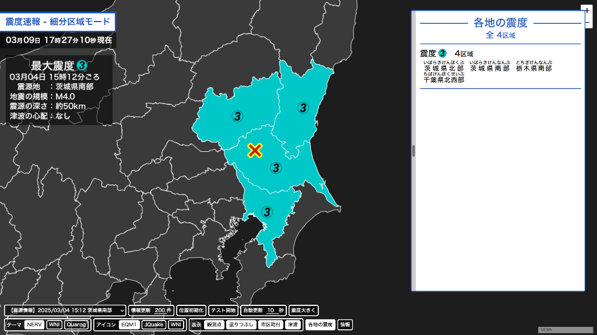
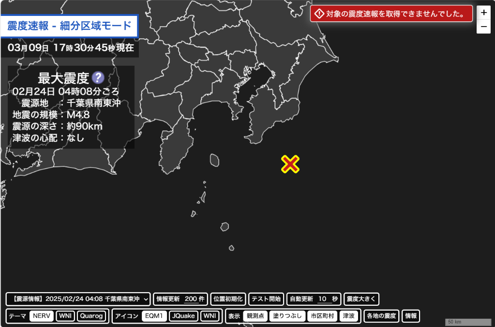
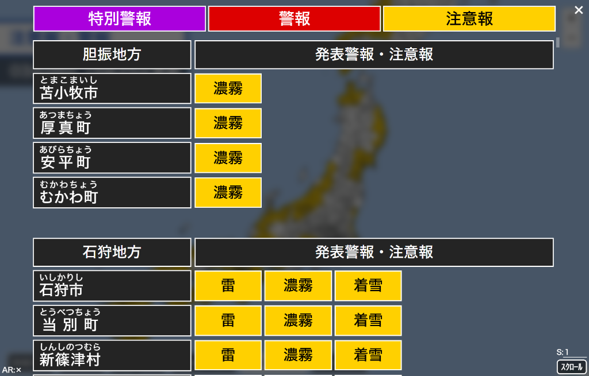

Webアプリアップデートのお知らせ
Webアプリアップデートのお知らせこれらのアップデート内容はassignment Webアプリご意見箱からいただいたものです。
ぜひ、Webアプリにご意見・ご要望等ございましたらこちらのフォームにご回答をお願いいたします。
アップデートの詳細は以下のとおりです。
-
新機能
-
earthquake 震度分布図
震源情報を描画する際に、同じ地震の震度速報を描画することができるようになりました。
同じ地震の震度速報を描画するには、震度速報が直前の情報であり、発生日時が一致している必要があります。
震度速報の条件を満たしていない場合は、右上に条件を満たしていない旨のエラーが出力されます。

-
sunny 警報注意報Viewer
スクロール速度を変更することができるようにしました。
スクロールボタンの上のテキストボックスの数字を変更することで、スクロール速度を変更することができます。
速度は「値×50px / s」となります。
-
earthquake 震度分布図